第01讲 认识方程
第01讲 认识方程

课程标准 | 学习目标 |
①掌握方程、一元一次方程的定义 ②理解方程的解与解方程 | 1. 掌握方程、一元一次方程的定义． 2. 理解方程的解与解方程． |
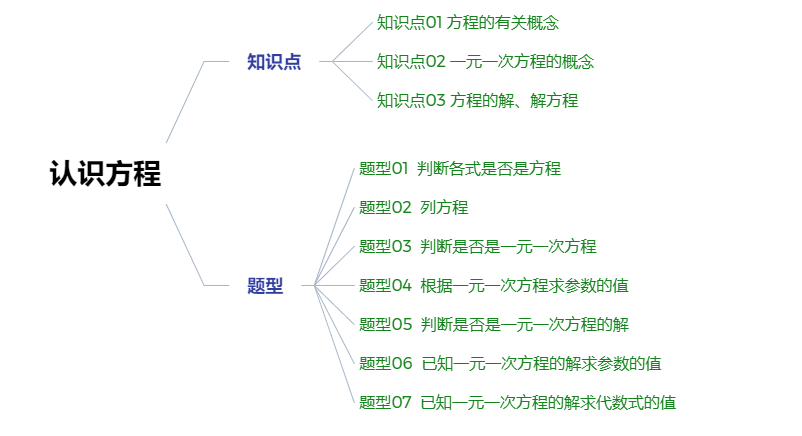

知识点01 方程的有关概念
定义：含有未知数的等式叫做方程.
【说明】判断一个式子是不是方程，只需看两点：一是等式；二是含有未知数．
【即学即练1】
1．（23-24六年级下·全国·假期作业）已知下列式子：
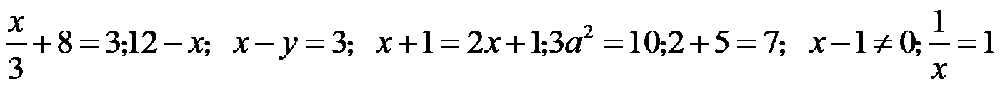
．其中方程的个数为（ ）A．3 B．4 C．5 D．6
知识点02 一元一次方程的概念
定义：只含有一个未知数（元），并且未知数的次数都是1，这样的方程叫做一元一次方程.
【说明】“元”是指未知数，“次”是指未知数的次数，一元一次方程满足条件：
①首先是一个方程；②其次是必须只含有一个未知数；③未知数的指数是1；④分母中不含有未知数．
【即学即练2】
1．（23-24六年级下·上海松江·期中）下列式子：① ；②
；② ；③
；③ ；④
；④
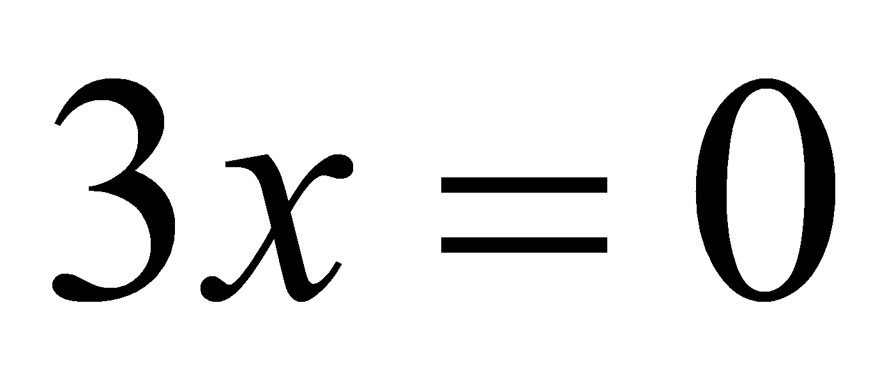
；⑤ ；⑥
；⑥ 中，一元一次方程共有（ ）
中，一元一次方程共有（ ）A．1个 B．2个 C．3个 D．4个
2．（23-24七年级下·四川乐山·期末）已知关于 的方程
的方程 是一元一次方程，则实数
是一元一次方程，则实数 的取值是（ ）
的取值是（ ）
A．1 B． C．1或 D．0
C．1或 D．0
知识点03 方程的解、解方程
1.方程的解：使方程左右两边的值相等的未知数的值，叫做方程的解.
2.解方程：求方程的解的过程.
【即学即练3】
1．（23-24七年级下·广东珠海·开学考试）下列方程中，解为 的方程是（ ）
的方程是（ ）
A． B．
B． C．
C． D．
D．

题型01 判断各式是否是方程
【典例1】（2024七年级上·江苏·专题练习）下列式子中，方程的个数是（ ）
① ；②
；② ；③
；③ ；④
；④ ；⑤
；⑤
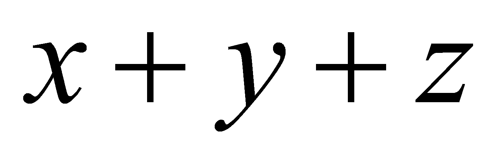
；A．2 B．3 C．4 D．5
【变式1】（2024七年级上·江苏·专题练习）在 ；
；
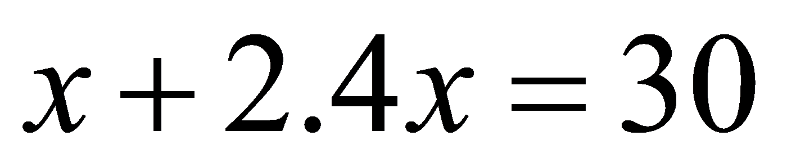
；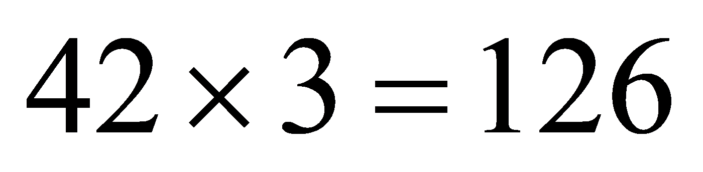
；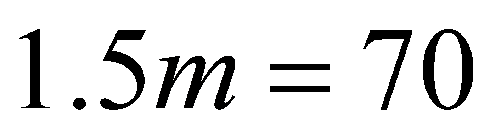
； 中，方程有（ ）个．
中，方程有（ ）个．A．2 B．3 C．4
【变式2】（24-25九年级上·全国·单元测试）下列各式 ，
， ，
， （a，b为已知数），
（a，b为已知数）， ，
， 中，方程有（ ）
中，方程有（ ）
A．1个 B．2个 C．3个 D．4个
【变式3】（23-24七年级上·全国·单元测试）下列各式：①  ；②
；②  ；③
；③  ；④
；④  ；⑤
；⑤  ；⑥
；⑥  ；⑦
；⑦
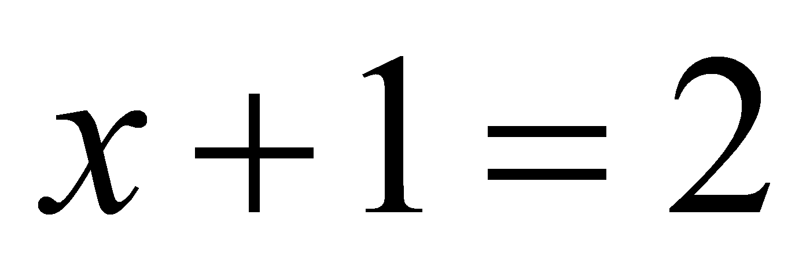
；⑧ ．其中是方程的有（ ）
．其中是方程的有（ ）A．①②④⑤ B．①②⑤⑦⑧ C．①④⑦⑧ D．8 个都是
题型02 列方程
【典例2】（23-24七年级下·全国·期末）列等式表示“的2倍与10的和等于8” ．
【变式1】（23-24六年级下·全国·单元测试）设某数为x，如果某数的2倍比它的相反数大1，那么列方程是 ．
【变式2】（22-23七年级下·广东河源·开学考试）一个长方形场地的周长为 米，长比宽的
米，长比宽的 倍少
倍少 米．如果设这个场地的宽为米，那么可以列出方程为 ．
米．如果设这个场地的宽为米，那么可以列出方程为 ．
【变式3】（23-24八年级上·陕西咸阳·期中）蛋白质和碳水化合物是我们日常饮食中的两个重要组成部分，它们都是身体所需的营养素，能够为我们提供能量，一瓶牛奶的营养成分中，碳水化合物含量是蛋白质的 倍，碳水化合物，蛋白质与脂肪的含量共
倍，碳水化合物，蛋白质与脂肪的含量共
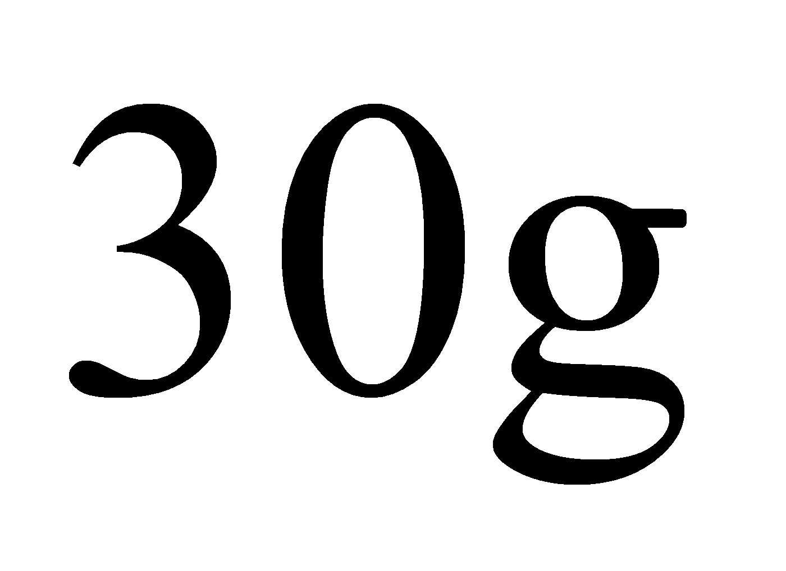
．设蛋白质的含量为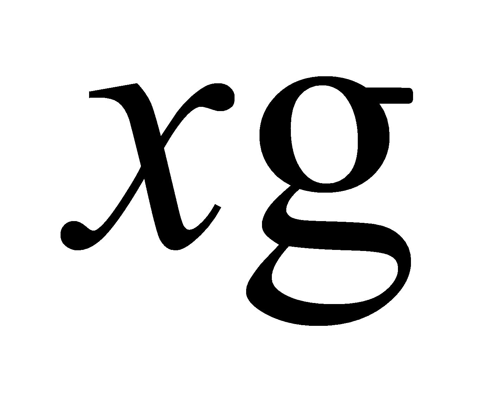
，脂肪的含量为 ，可列出方程为 ．
，可列出方程为 ．题型03 判断是否是一元一次方程
【典例3】（23-24七年级上·贵州遵义·期中）下列方程是一元一次方程的是（ ）
A． B．
B． C．
C． D．
D．
【变式1】（24-25七年级上·黑龙江哈尔滨·阶段练习）下列方程中，是一元一次方程的是（ ）
A． B．
B． C．
C． D．
D．
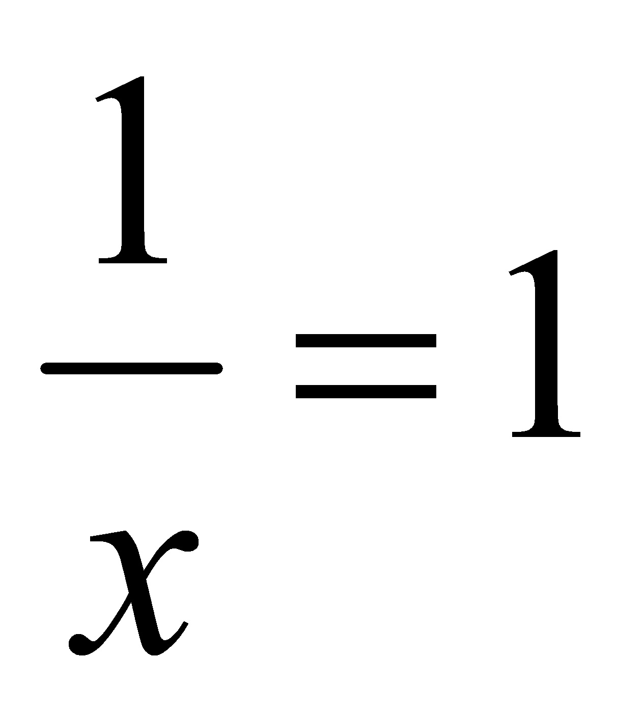
【变式2】（23-24七年级下·四川宜宾·阶段练习）已知下列方程：（1） ；（2）
；（2） ；（3）
；（3）  ；（4）
；（4）
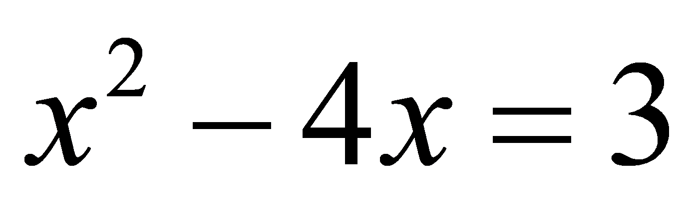
； （5） ；（6）
；（6） ．其中一元一次方程的个数有（ ）
．其中一元一次方程的个数有（ ）A．2 B．5 C．4 D．3
【变式3】（23-24七年级上·广东汕头·期末）已知下列方程：① ；②
；②
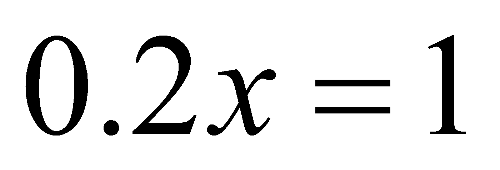
；③ ；④
；④ ；⑤
；⑤ ，其中一元一次方程有（ ）
，其中一元一次方程有（ ）A．2个 B．3个 C．4个 D．5个
题型04 根据一元一次方程求参数的值
【典例4】（24-25七年级上·黑龙江哈尔滨·阶段练习）已知 是关于的一元一次方程，那么
是关于的一元一次方程，那么 ．
．
【变式1】（23-24七年级上·湖南长沙·期末）已知 是关于的一元一次方程，则
是关于的一元一次方程，则 的值为 ．
的值为 ．
【变式2】（24-25九年级上·甘肃兰州·阶段练习）已知关于的方程 是一元一次方程，则 ．
是一元一次方程，则 ．
【变式3】（23-24七年级上·全国·单元测试）若关于的方程 是一元一次方程，则的值为 ．
是一元一次方程，则的值为 ．
题型05 判断是否是一元一次方程的解
【典例5】（24-25七年级上·黑龙江哈尔滨·阶段练习）下列方程中，解为的是（ ）
A． B．
B．
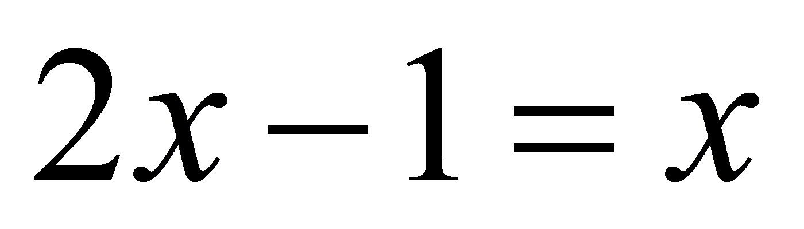
C． D．
D．
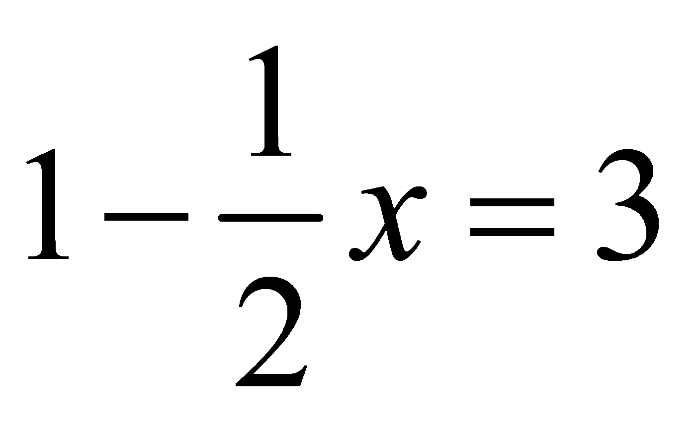
【变式1】（23-24七年级下·吉林长春·期中）下列方程中，解为 的是（ ）
的是（ ）
A． B．
B． C．
C． D．
D．
【变式2】（24-25七年级上·黑龙江哈尔滨·阶段练习）下列方程中，解是 的方程是（ ）
的方程是（ ）
A．
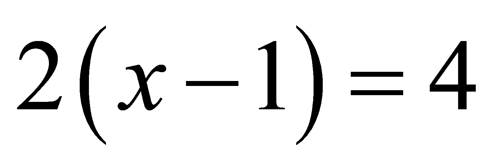
B．
C．
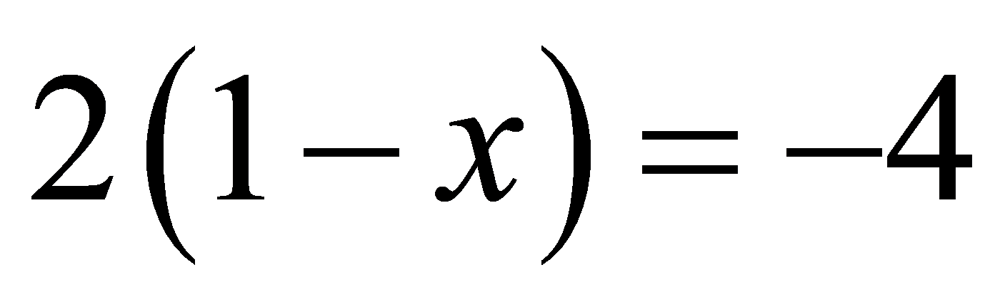
D．
【变式3】（23-24七年级上·江苏苏州·期末）下列方程中，解是 的是（ ）
的是（ ）
A． B．
B． C．
C． D．
D．
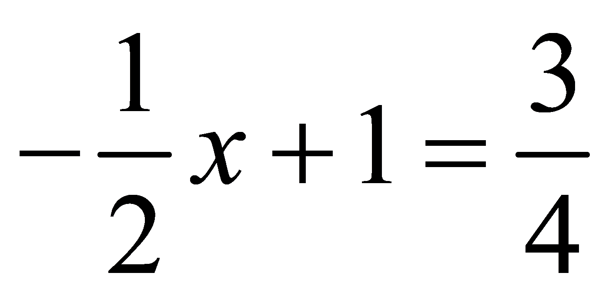
题型06 已知一元一次方程的解求参数的值
【典例6】（23-24七年级下·四川泸州·开学考试）若是方程 的解，则
的解，则 ．
．
【变式1】（23-24七年级上·江苏常州·期末）是方程 的解，则的值是 ．
的解，则的值是 ．
【变式2】（23-24七年级下·河南驻马店·期末）若关于x的方程
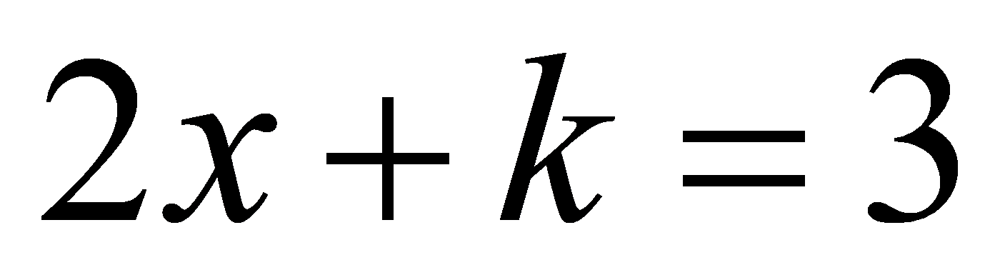
的解为， 则k的值为 ．【变式3】（23-24七年级上·全国·单元测试）是方程 的解，则 ．
的解，则 ．
题型07 已知一元一次方程的解求代数式的值
【典例7】（23-24七年级上·广东佛山·期末）若是方程 的解，则
的解，则 的值为 ．
的值为 ．
【变式1】（23-24七年级上·四川成都·期末）若关于x的方程 的解是
的解是 ，则
，则 的值为 ．
的值为 ．
【变式2】（24-25九年级上·全国·课后作业）已知关于x的一元一次方程 的解是，则
的解是，则
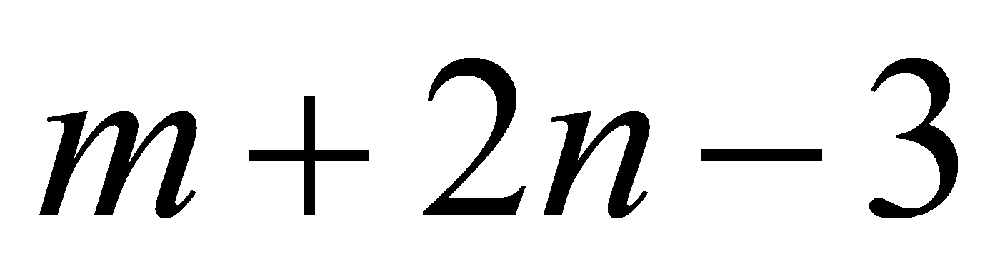
的值为 ．【变式3】（23-24七年级上·陕西西安·阶段练习）如果 是方程
是方程 的解，那么
的解，那么 ．
．

一、单选题
1．（23-24七年级下·四川乐山·期末）下列各式中，是方程的是（ ）
A． B．
B．
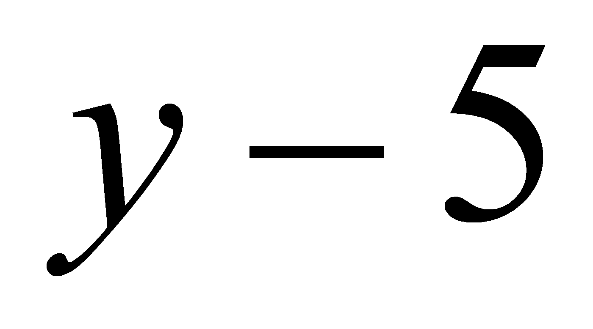
C． D．
D．
2．（24-25七年级上·河南漯河·开学考试）下列方程中，（ ）的解是
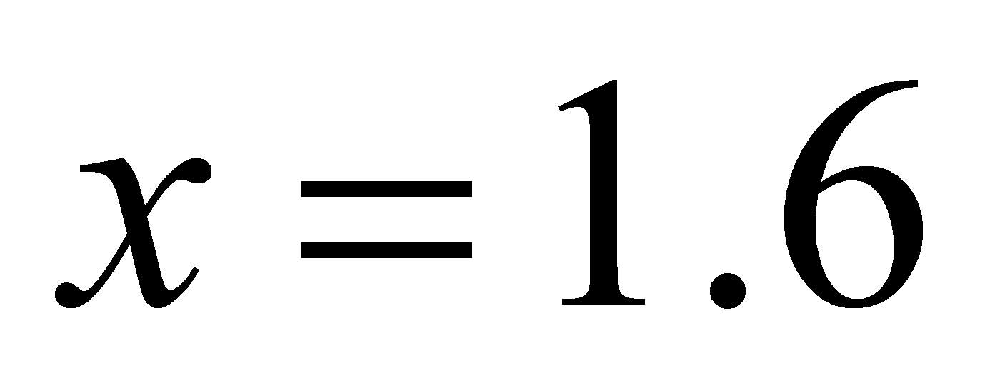
．A．
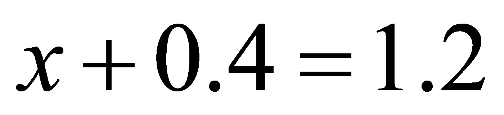
B．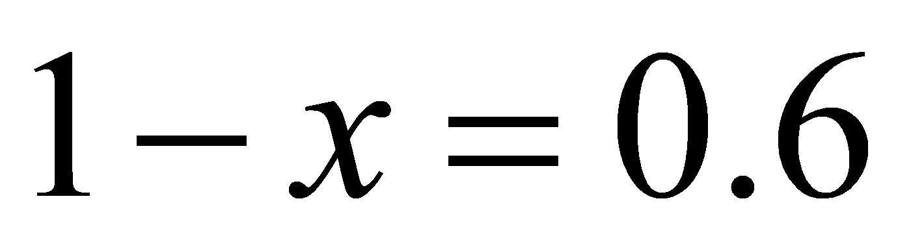
C．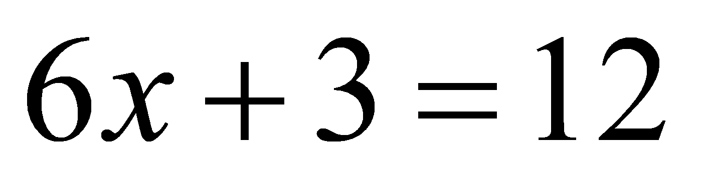
D．
3．（2024七年级上·北京·专题练习）如果关于 的方程
的方程
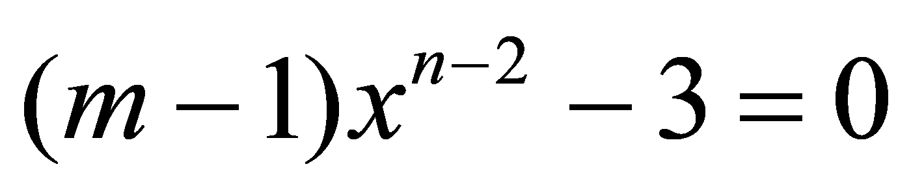
是一元一次方程．那么 ，
， 应满足的条件是（ ）
应满足的条件是（ ）A． ，
， B．
B．
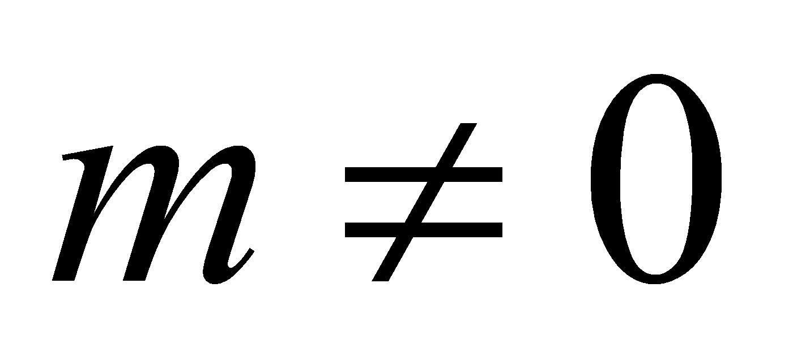
， C．
C． ， D．
， D．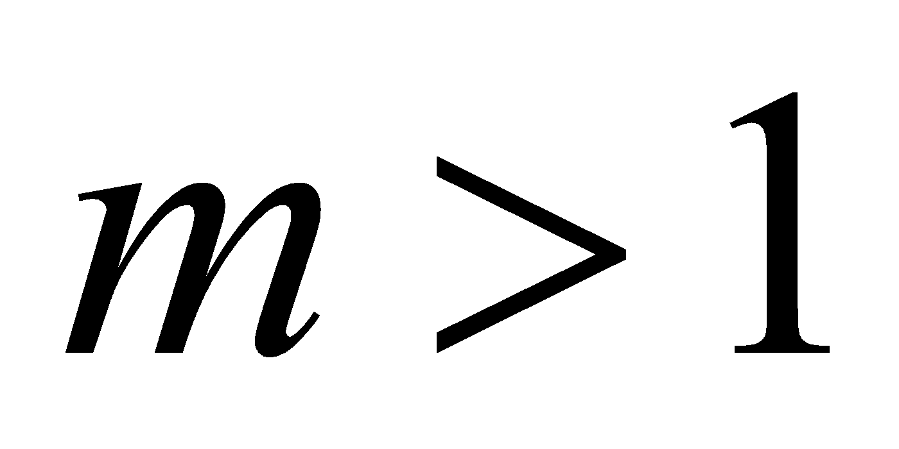
，4．（24-25九年级上·重庆·阶段练习）关于x的一元二次方程 的一个解是
的一个解是 ，则
，则
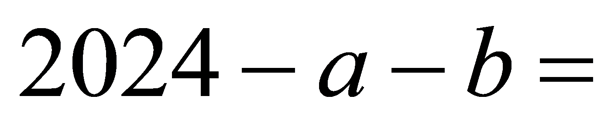
（ ）A．2025 B．2024 C．2023 D．2022
5．（23-24六年级下·上海·期中）式子①
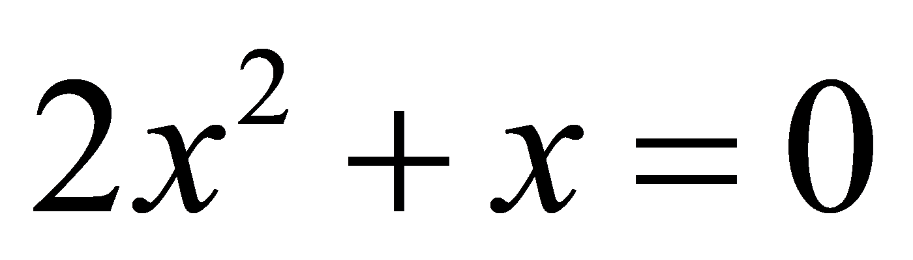
，② ，③
，③ ，④
，④ ，⑤
，⑤ 中，是一元一次方程有（ ）
中，是一元一次方程有（ ）A．1个 B．2个 C．3个 D．4个
二、填空题
6．（24-25七年级上·全国·课后作业）试写出一个解为 的一元一次方程： ．
的一元一次方程： ．
7．（24-25七年级上·黑龙江哈尔滨·阶段练习）x与6的和的2倍等于x的3倍，用方程表示数量关系为 ．
8．（23-24七年级上·甘肃武威·期末）已知下列各式：
①
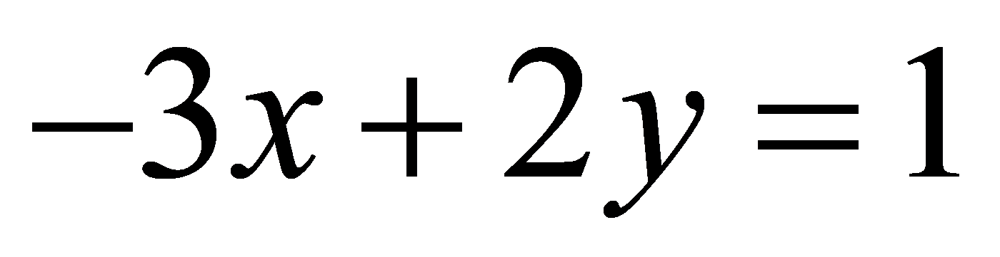
；②；③
 ；④
；④ ；⑤
；⑤ ；⑥
；⑥ ；⑦
；⑦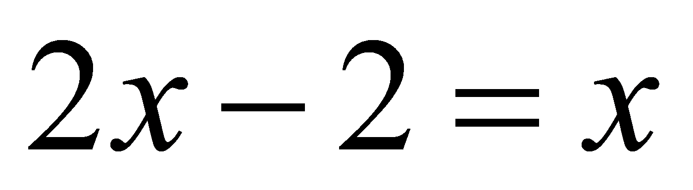
．其中方程有 ，一元一次方程有
9．（23-24七年级下·湖南衡阳·阶段练习）已知关于的方程 是一元一次方程，则
是一元一次方程，则 ．
．
10．（22-23七年级上·重庆渝中·阶段练习）若 是关于的一元一次方程
是关于的一元一次方程 的解，则
的解，则 的值是 ．
的值是 ．
三、解答题
11．（23-24七年级上·安徽淮南·期中）检验括号内的未知数的值是否为方程的解．
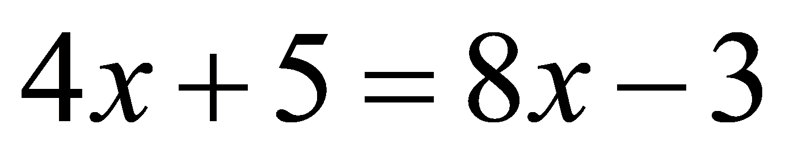
（ ，）
，）12．（21-22七年级上·陕西渭南·阶段练习）用方程表示下列语句所表示的相等关系：
(1)七年级学生人数为n，其中男生占
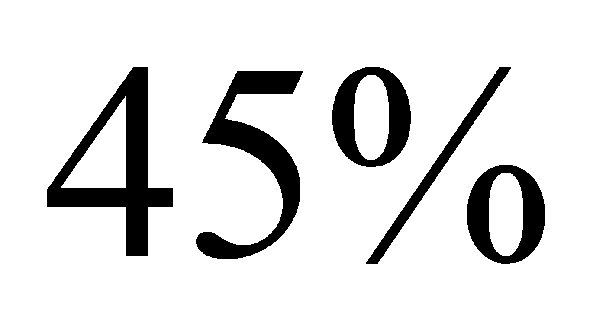
，女生有 人；
人；(2)一种商品每件的进价为a元，售价为进价的
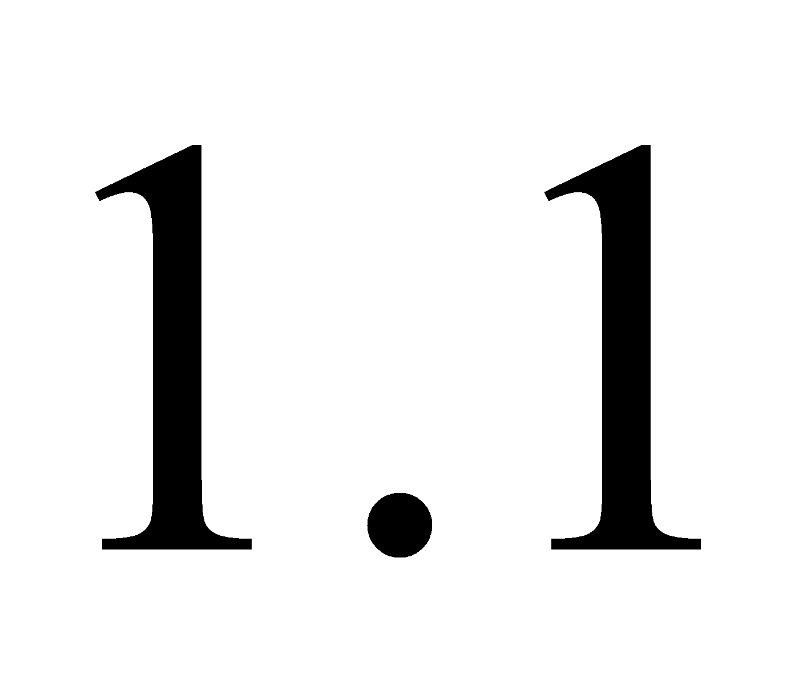
倍，现每件又降价 元，现售价为每件
元，现售价为每件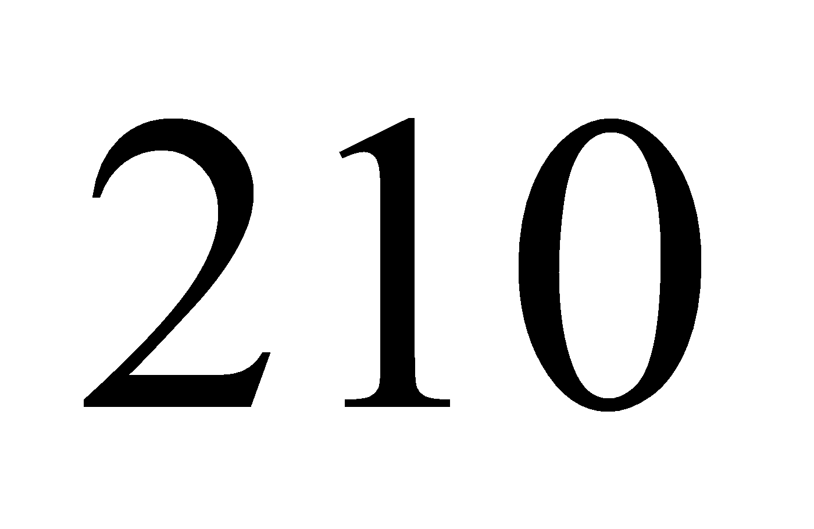
元．13．（22-23六年级上·全国·单元测试）根据下列题干设未知数列方程，并判断它是不是一元一次方程．
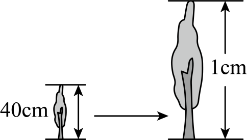
(1)一个数的 倍比它的
倍比它的 倍多，求这个数．
倍多，求这个数．
(2)从 长的木条上截去段同样长的木条还剩下
长的木条上截去段同样长的木条还剩下 长的短木条，截去的木条每段长多少
长的短木条，截去的木条每段长多少
(3)如图，小颖种了一株树苗，开始时树苗高为 ，栽种后每周长高约
，栽种后每周长高约 ，大约几周后树苗长高到
，大约几周后树苗长高到 ？
？
14．（23-24七年级上·湖南怀化·期末）已知关于x的方程 是一元一次方程．
是一元一次方程．
(1)求m的值；
(2)已知：是该一元一次方程的解，求n的值．
15．（23-24六年级上·山东威海·期末）已知
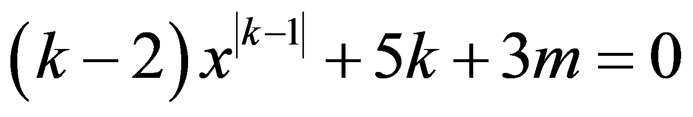
是关于的一元一次方程．(1)求 的值；
的值；
(2)若方程的解为 ，求此时的值．
，求此时的值．
16．（2024七年级下·北京·专题练习）已知 是关于x的方程
是关于x的方程 的解．
的解．
(1)求k的值；
(2)在（1）的条件下，已知线段 ，点C是线段
，点C是线段 上一点，且
上一点，且 ，若点D是
，若点D是 的中点，求线段
的中点，求线段 的长．
的长．
(3)在（2）的条件下，已知点A所表示的数为 ，点B所表示的数为4，有一动点P从点A开始以2个单位长度每秒的速度沿数轴向左匀速运动，同时另一动点Q从点B开始以4个单位长度每秒的速度沿数轴向左匀速运动，当时间为多少秒时，有
，点B所表示的数为4，有一动点P从点A开始以2个单位长度每秒的速度沿数轴向左匀速运动，同时另一动点Q从点B开始以4个单位长度每秒的速度沿数轴向左匀速运动，当时间为多少秒时，有 ？
？